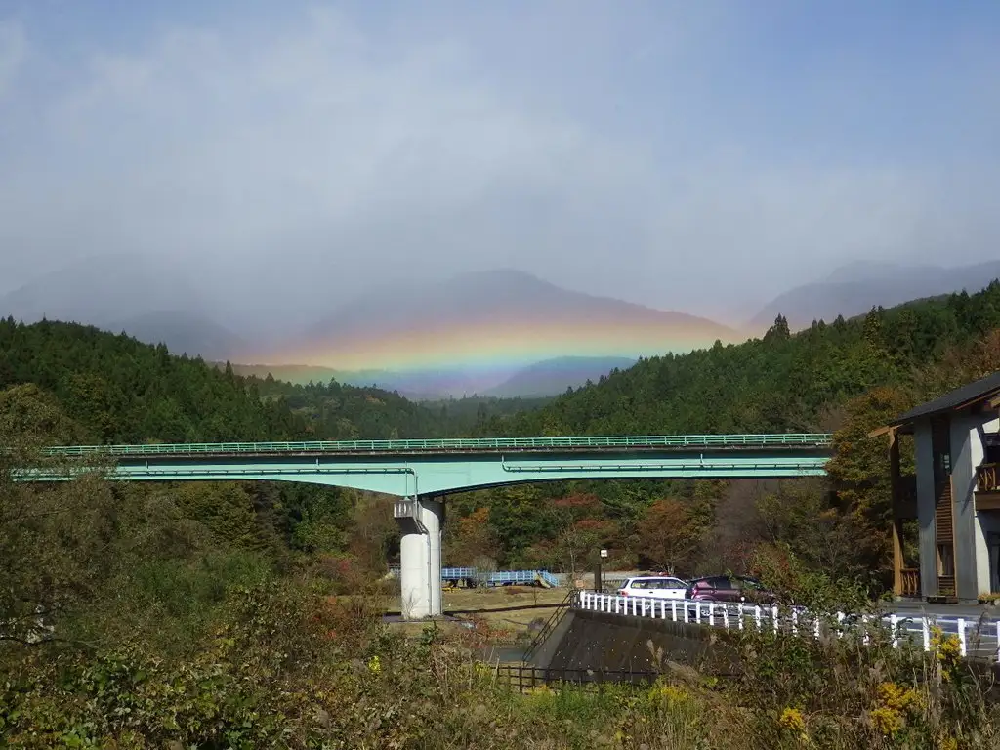
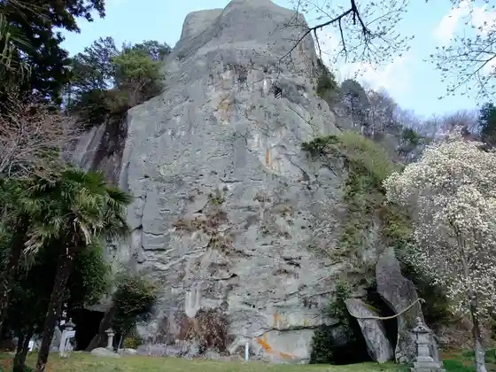
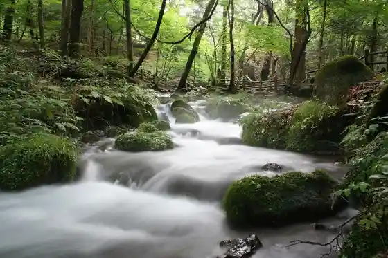
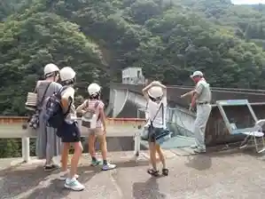
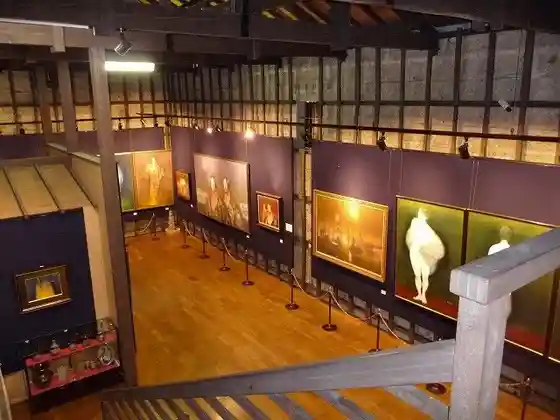

Japan / Tochigi / Shioya
Shioya · Tochigi
Shioya
Highlighted on the Tochigi map.

Shioya Town Hall
Kurosawa Hashi
Shioya, Tochigi · 0287-44-2185 · Official / source link
Sanuki Sekibutsu
Shioya, Tochigi · 0287-45-2211 · Official / source link

Shojin Sawa Yusui

Nishi Arakawa Dam
Shioya, Tochigi · Official / source link

Waki Memorial Museum
Shioya, Tochigi · 0287-45-1010 · Official / source link

Nearby in Tochigi: ← Shimotsuke · Takanezawa →
Other towns: Ashikaga · Haga · Ichikai · Kaminokawa · Kanuma · Mashiko · Mibu · Moka · Motegi · Nakagawacho · Nasukarasuyama · Nasumachi · Nasushiobara · Nikko · Nogi · Otawara · Oyama · Sakurashi · Sano · Shimotsuke · Takanezawa · Tochigi · Utsunomiya · Yaita
All towns in Tochigi · Back to all prefectures